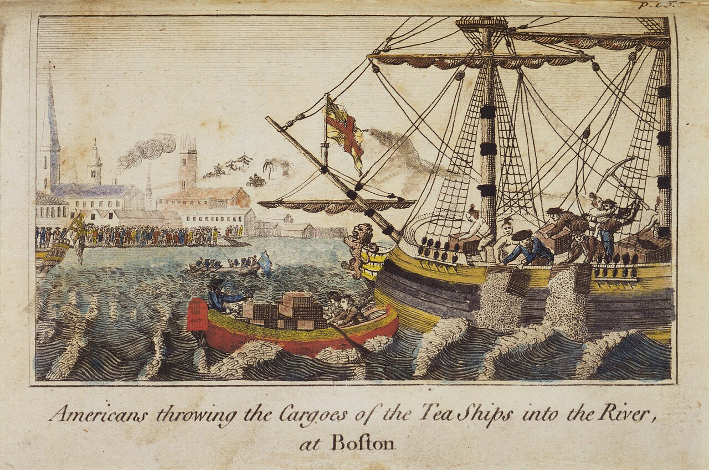
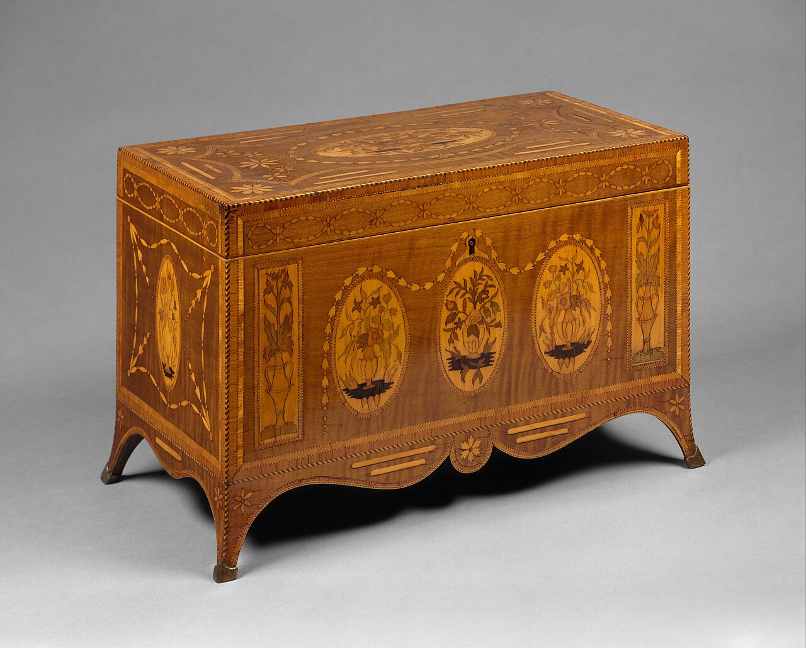
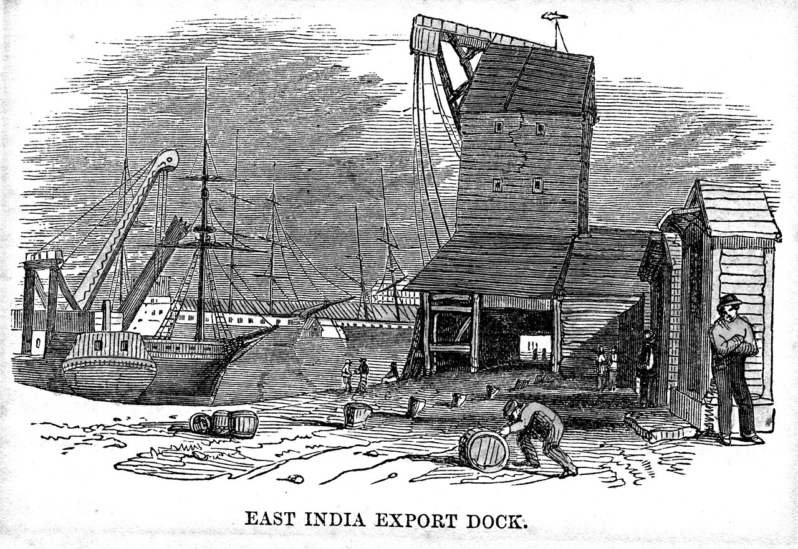

Chapter Seven
1774
"They have made a teapot of Boston harbour, and the leaf was three years stale."
— London newsletter, January 1774
1774: Too Big to Sink

Chapter Sections
I. The Year the Money Stopped
It starts, the way these things start, with one man running. June of seventy-two: a banker named Fordyce gambles the wrong way on East India stock, loses more than exists, and takes ship for France ahead of his creditors — and behind him the credit of London comes down like rigging cut through at the mast. Banks close in Edinburgh that have never missed a payment in living memory. Houses fold in Amsterdam over paper signed in Cornhill. Men who were rich on Tuesday are explaining themselves to magistrates by Friday.
Wapping feels it the way Wapping feels everything — through the wages first. Hiring stops on the river. Chandlers give no more credit. A dockworker who has drunk in this bar for twenty years asks, for the first time anyone can remember, for a week's grace on his slate, and gets it, and doesn't meet anyone's eye for a month.
And then the word goes round that ought to be impossible, and isn't: the Company cannot pay its bills.
The East India Company. The Company that owns Bengal, that collects the taxes of twenty million people, that has paid a dividend through wars and famines the way the tide pays its two visits a day — borrowed too deep, kept the dividend fat to keep the stock price up, and now owes the customs house more than it can find, with a million pounds of unsold tea sitting in bond above the river because half of England drinks its tea smuggled and cheap from the Dutch.
The greatest company in the world, a waterman says, wonderingly, into his pint. Broke. Like a common tally-shop.
Not broke, a Company clerk corrects him, from down the bar, with the particular testiness of a man whose wages are in question. Embarrassed.
Embarrassed, the waterman agrees, pleasantly. That's the gentleman's word for it, right enough.
II. Naylor
He has been a tallyman in the Company's tea warehouses for thirty-one years, and it shows in the way he drinks his ale — measured, level, an inventory of one. Naylor. Nobody uses his front name; possibly nobody remembers it, himself included.
His trade is counting, and he is proud of it the way other men are proud of a strong back or a good singing voice. Bohea, Congou, Singlo, Hyson — he knows the teas by smell through the chest-boards, knows a short-weight chest by the feel of one corner lifted, knows which lots came off which ships in which season going back a decade without opening a book, though the books are perfect too. Every chest that passes his station gets his mark chalked on the ledger and branded small on the wood: a hooked N, like a gaff. There are men on this river who cannot write their own names who know Naylor's.
For three years now his counting has been a kind of grief. The bonded floors above the river are full to the roof-beams — years of tea, bought in Canton with Bengal silver, shipped home, landed, stacked, and never sold, because the Company's price wears a duty like an anchor and the smugglers' price doesn't. He reports the state of it every quarter, conscientious as ever: which lots are ageing, which are past their best, which are fit now for nothing better than dyeing paper. The reports go upstairs. Nothing comes down. You cannot tally a thing into mattering, he has learned. You can only keep the count for whoever finally asks.
III. The Arithmetic of Rescue
The Company table is quieter than usual this season, which is how you know the matter is serious. Loud is for other people's troubles.
The young writer at the table — there is always a young writer at that table; the Company grows them like cress — wants to understand the thing that has just happened in Westminster, because he cannot make the shape of it sit straight. Parliament has lent the Company one million four hundred thousand pounds. Of public money. To a private company of merchants, to pay debts the merchants made themselves, chasing a dividend they had no business promising.
Why, he asks, simply. Why would Parliament pay for our mistakes?
The senior man at the table sets down his glass, and there is something in his face that is almost respect for the size of the question.
Because they cannot afford not to, he says. Do the sum. The Company owes the customs four hundred thousand a year — lose the Company, lose the revenue. Half the City holds Company paper; every widow with forty pounds a year holds Company stock; the Bank itself is in as deep as anyone. If the Company goes down it does not go down alone — it takes the funds, the Bank, the credit of the nation, and every ship on this river with it. A vessel that size doesn't sink. It founders on top of everyone.
So Parliament must keep us afloat, the young writer says slowly, because we are too large to be allowed to drown.
Too large to be let sink, the older man agrees. It is a new kind of safety, and I recommend you notice it, because it will be imitated. Build a thing big enough, tangle it deep enough in everyone else's money, and you may steer it as badly as you please — the rescue is compulsory.
That's not seamanship, says a voice from down the bar, unbidden — the waterman again, who has been following the whole exchange with the frank attention Wapping gives to other men's arithmetic. That's mutiny with the numbers.
Nobody at the Company table disputes it. The senior man only adds, quieter, as much to himself as the table: mind — they will want something for it. Parliament does not lend; it buys. There's an Act come with the money that puts the Treasury's men inside our house, reading our letters. This year they hold a mortgage on the machine. One day they will simply hold the machine.
Nobody at the table wants to follow that thought any further, so nobody does. It has eighty-four years left to travel, and it is in no hurry.
IV. The Scheme

The orders come down to the warehouses in the summer of seventy-three, and Naylor reads them twice to be sure the words are doing what they appear to be doing.
The hoard is going to America.
All of it, near enough — the bonded mountains he has tallied and re-tallied and reported into silence, seventeen million pounds of leaf and more. Parliament has passed a Tea Act to make it possible: the Company may ship direct to the colonies for the first time, no middlemen, no London auction, with the duty drawn back at this end so the tea lands cheaper than the smugglers can sell it. Cheaper than honest men have ever seen tea. Except for one small thing, kept deliberately: the threepence a pound owed in America itself. That stays. Not for the money — threepence on tea will not refloat anything. For the principle. Because the right to lay it must not be seen to lapse.
Naylor spends the autumn tallying out chests he tallied in three years before, his own hooked N coming back under his chalk like an old debt. Bohea mostly, and he knows to the season how stale it is, because he has been reporting exactly that, quarterly, to nobody.
His brother's boy is in Boston. Ben. Went out eight years ago, keeps a shop now near the Long Wharf, sells cordage and lamp-oil and, like every shopkeeper in the colonies, tea he does not discuss the origins of. Writes twice a year — cramped, dutiful letters, the letters of a man who was never easy with a pen and loves his uncle anyway.
Naylor sits at the end of the bar on a night in September with paper and ink borrowed from the keeper, and takes most of the evening over half a page, because what he is doing, on any honest reading, is writing against his employer's interest, signed, in his own hand, after thirty-one years — and letters get opened. He does the sum the way he does every sum, all the way down, and then he writes it anyway.
The tea that is coming is cheap on purpose, he writes. The cheapness is the hook. The duty on it is small on purpose. The smallness is the precedent. They have sent you a bargain with a principle folded inside it, the way you'd fold a fish-hook into bread. Mind what you buy, boy. Nothing this Company sells is ever only the thing itself.
He pays for the ink, seals the letter, and posts it with the feeling — familiar to him from thirty-one years of quarterly reports — of dropping a true count down a well.
V. What Boston Did
The news comes up the river on the twentieth of January, off a ship that has beaten every mail across a winter Atlantic, and it is in this bar by supper, the way news of ships and cargoes has come to this bar for a hundred and seventy years.
Boston has thrown the tea in the harbour.
All of it — the whole of three shiploads, three hundred and forty-two chests, on a cold night in December. Men went aboard in Mohawk dress, faces blacked, and worked three hours by lantern light, methodical as stevedores: hoisted the chests, split them open, over the side. And this is the detail the bar keeps turning over, the one that quiets even the men who want to be outraged — they touched nothing else. Broke one padlock and sent a new one round the next day. Swept the decks after. One man who pocketed a handful of leaf was stripped of his coat and marched off the wharf by the rest. It was not a riot. Wapping knows riots the way a surgeon knows fevers, and this was no riot. This was an inventory, conducted in reverse.
Good tea, a docker mourns, on principle. A fortune of it, straight into the salt.
It was not good tea, Naylor says, from the end of the bar. It is the first thing he has said all evening, and something in the flatness of it turns heads. It was three years in bond and stale as ship's biscuit, most of it. I counted it in and I counted it out. They have not drowned a treasure. They have drowned a warehouse-clearing dressed as a favour.
The figures go round the room regardless, because they always do: nine, maybe ten thousand pounds of property, steeping in a harbour. At the Company table the talk is already of consequences, and nobody doubts there will be consequences. They'll close the port, the senior man says. Ships of war and a regiment, and an example made of the town, because the money is nothing but the precedent is everything — you cannot let ten thousand pounds of a rescued company sit on the sea-floor and call it politics.
We hanged pirates once to soothe an emperor, says the oldest man at the table, who is old enough to have heard that story from men who stood in this room for it. Now we'll garrison a town to soothe a parliament. The scale of the theatre improves. The play doesn't change.
All this, someone says from near the fire, not quite believing it, for threepence on the pound.
It was never the threepence, the senior man says, and for once there is no smugness in it at all, only the tiredness of a man who can see a long way down a road he has to walk anyway. It is about who sets it. It has only ever been about who sets it. And on that principle, I promise you, both sides will spend a great deal more than tea.
VI. The Marks

Naylor stays late that night, which is not his habit, nursing a last ale with his ledger-keeper's patience while the bar empties around him.
Somewhere at the bottom of a harbour three thousand miles west, in water colder than the Thames ever runs, there are chests going soft in the dark with a hooked N branded on their boards. His mark. His count. Tea he received, weighed, aged, reported, and tallied out again, every stage of its life recorded exactly and none of it mattering in the least — landed by his hand, drowned by strangers, and destined now to be argued over by parliaments and armies who will never once know or care that any of it was ever counted at all.
He never learns whether his letter arrived before the tea did. He never learns whether Ben stood on the wharf that night, or hauled a rope, or stayed home and bolted the shutters, or bought a pound of it the week before and drank the evidence. Letters take three months and answer less than they carry, and Ben's next one, when it comes in the spring, is cramped and dutiful and careful, the letter of a man writing in times when letters get opened, and it mentions the weather, and the price of cordage, and nothing else at all. Which is, Naylor decides, after reading it the fourth time, an answer of a kind. Careful is an answer.
The Company sails on. That is the whole moral of the year, if the year has one: it died in the summer of seventy-two and was not permitted to lie down, and whatever walks out of a rescue like that belongs a little less to itself than it did — mortgaged now to the same Parliament that will spend an army trying to collect its threepence, and lose a continent collecting it, though nobody drinking in this room tonight knows that part yet.
The river carried the chests out the way it carries everything. It was a different water that sent them back.